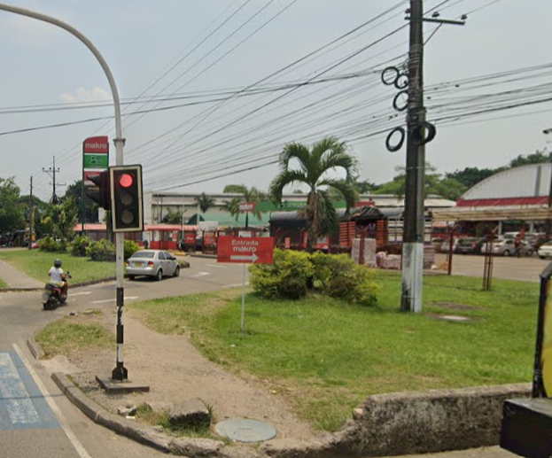

Semaforo Cerca del Centro Comercial Único
El semáforo que se muestra a continuación fue objeto de denuncia por parte de un ciudadano preocupado
por su estado de deterioro. Según el denunciante, el semáforo presentaba un notable nivel de oxidación,
que atribuía al desgaste acumulado por el paso del tiempo y la exposición constante a las condiciones
climáticas adversas. Este daño estructural no solo afecta la apariencia del semáforo, sino que también puede
comprometer su funcionamiento y poner en riesgo la seguridad vial de los transeúntes y conductores que dependen
de su señalización. La situación evidencia la necesidad de un mantenimiento más riguroso y frecuente de la infraestructura vial.
